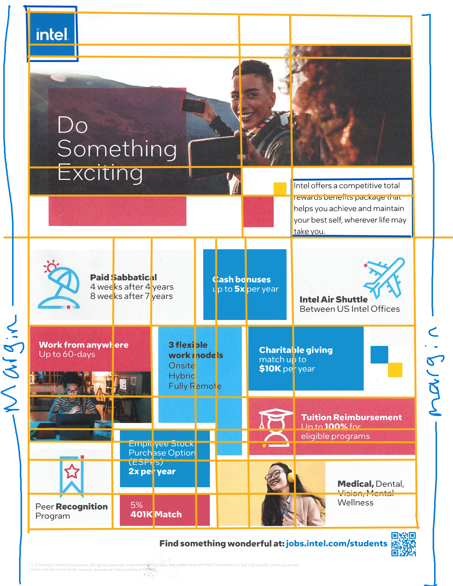
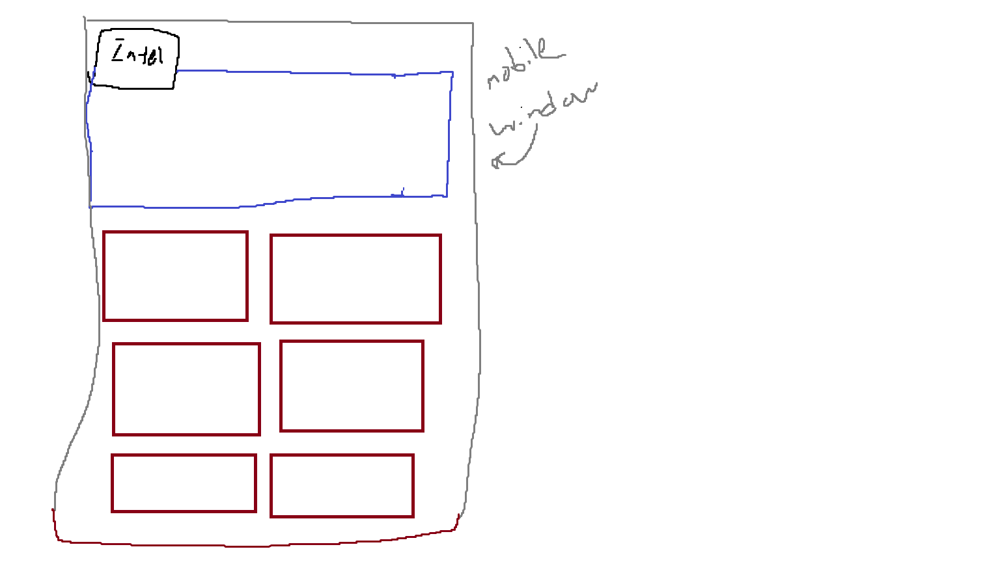
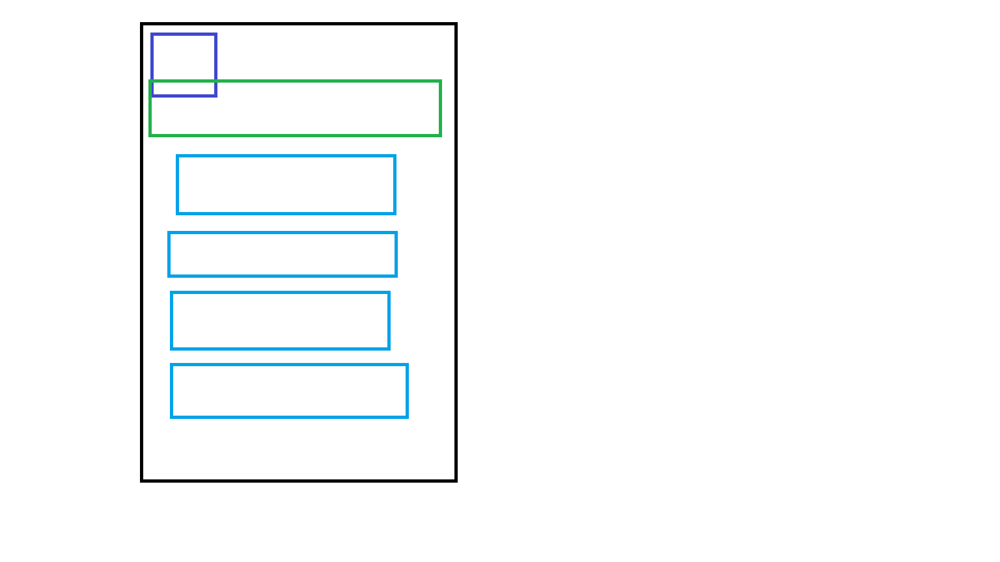

pdf source
PDF source
css grid layout

This is one of the potential mobile outline

This is the other possible mobile outline.

Spec page + notes
Go to spec page
- The goal is potential recuirter for potential job.
Thus, I chose something that isn't too messy up looks decently okay.
- The most challening parts in using this layout is the irregular shape of certian boxes
as well as using css grid to adapt to assymmetric design.
- Another point is adapting to mobile and changing window sizes because of the irregular shapes of certain boxes.
- For this, I use overlapping to achieve the irregular shapes with white borders around the overlapping box